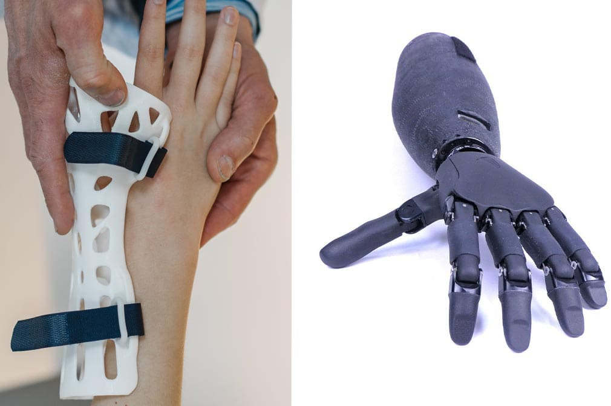
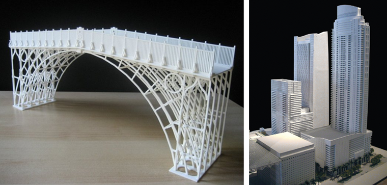
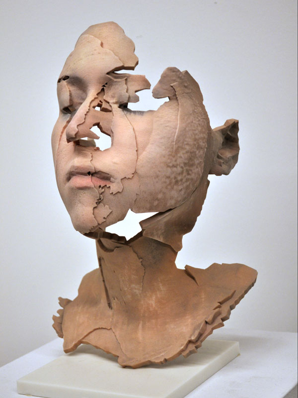

Prototipado Rápido
La capacidad de crear prototipos rápidamente es uno de los usos más importantes de la impresión 3D. Las empresas pueden producir y probar nuevos diseños sin la necesidad de costosos moldes o procesos largos.
.png)
Medicina
En la medicina, la impresión 3D se utiliza para crear prótesis personalizadas, implantes quirúrgicos y modelos anatómicos para planificar procedimientos médicos. También se están explorando aplicaciones de bioimpresión, que permiten imprimir tejidos y órganos.

Automotriz
La industria automotriz utiliza la impresión 3D para fabricar piezas más ligeras, complejas y con mejor rendimiento. Las piezas impresas en 3D pueden ser tanto prototipos como componentes funcionales para los vehículos.

Aeroespacial
La industria aeroespacial también ha adoptado la impresión 3D para la fabricación de piezas ligeras y de alta resistencia que no solo ahorran costos, sino que mejoran la eficiencia de los aviones.

Arquitectura y Construcción
En el sector de la construcción, la impresión 3D se ha utilizado para crear modelos arquitectónicos e incluso casas. Los avances en impresoras de gran escala permiten la creación de estructuras completas con materiales de construcción.

Arte y Diseño
Artistas y diseñadores de productos han utilizado la impresión 3D para crear esculturas, joyas y otros artículos únicos que de otro modo serían imposibles de fabricar.
